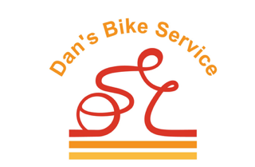
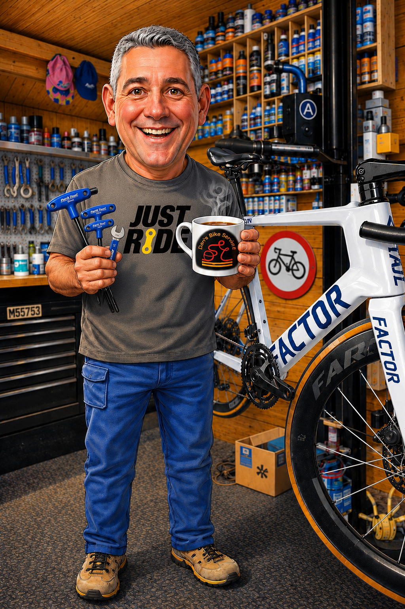
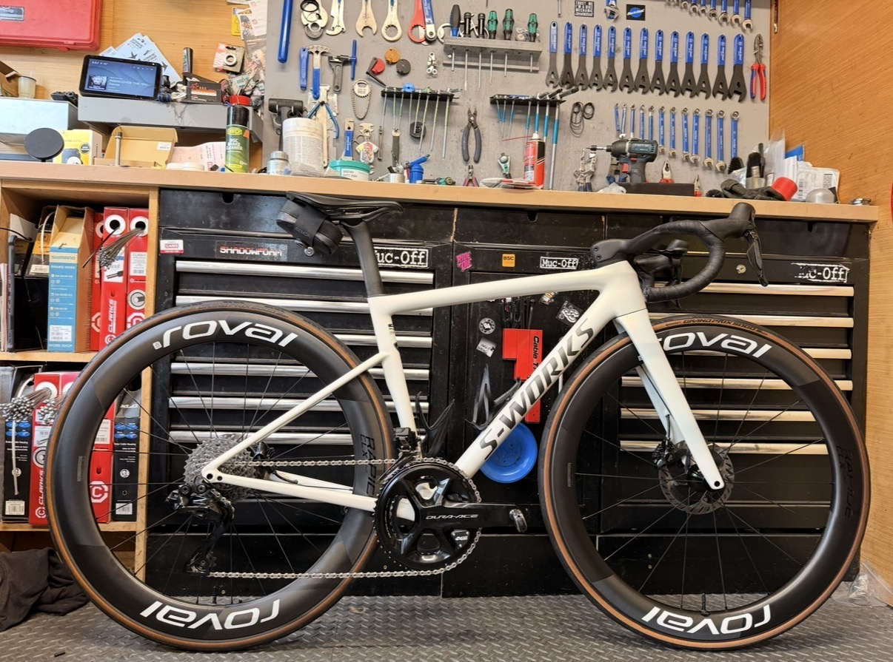
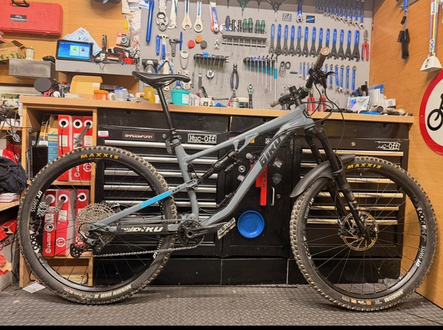
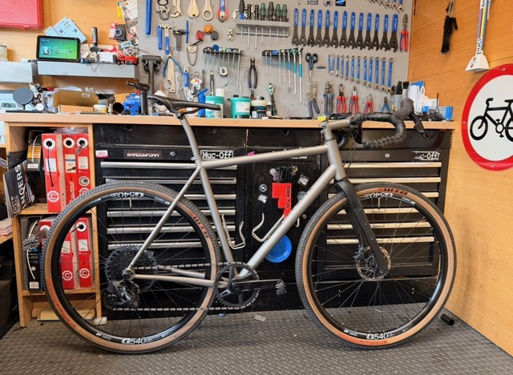
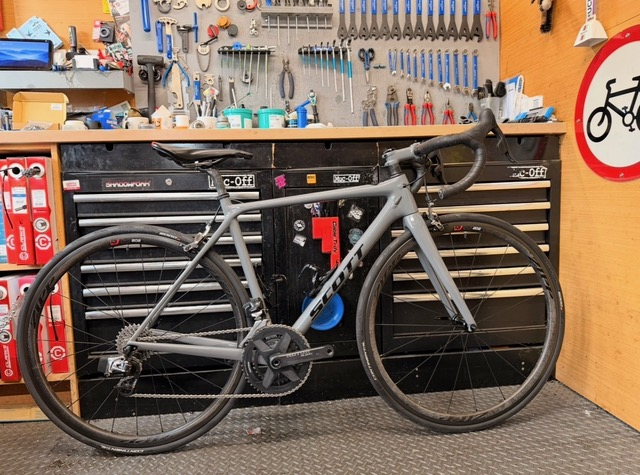
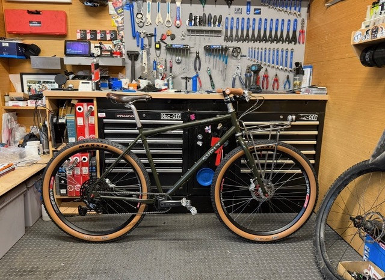
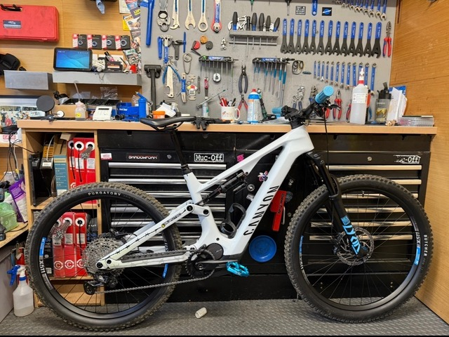

Professional bike repairs, bicycle servicing and maintenance for commuters, families, road cyclists and everyday riders across Shoreham-by-Sea and Sussex. Friendly service, honest pricing and quality workmanship every time.

Dan’s Bike Service was founded in 2019 from a genuine passion for cycling and quality workmanship. Based in Shoreham-by-Sea, the goal has always been simple — provide honest, reliable bicycle servicing without the confusion, hidden costs or rushed repairs often found elsewhere.
Whether it’s a commuter bike used every day, a family bike needing attention, or a high-performance Race machine, every bike receives the same level of care and detail.
From puncture repairs and brake adjustments to complete rebuilds and annual servicing, Dan’s Bike Service helps riders across Sussex keep their bikes safe, smooth and ready to ride.
Professional bicycle servicing and repairs in Shoreham-by-Sea for commuters, road cyclists, casual riders and families across Sussex.
(plus any parts identified and subsequent labour)
Recommended every 6-12 months to keep your bike in perfect working order. Ideal for a commuter bike or a daily user training.
(plus any parts identified and subsequent labour)
This is recommended every 12 months for your daily user and every 9 months for a heavy user racking up many miles commuting or training.
For when you’ve bought a new bike online, we’ll put it together for you and double check everything is set up correctly and ready to roll.
Dan’s Bike Service proudly provides bicycle repairs and bike servicing across Shoreham-by-Sea, Lancing, Southwick, Worthing, Portslade, Hove, Brighton and the surrounding Sussex area. Whether you need a puncture repair, annual bike service or complete rebuild, you’ll receive honest advice, transparent pricing and reliable workmanship.






“Amazing service and really friendly. My bike feels better than ever.”
“Quick turnaround, fair prices and fantastic workmanship.”
“Dan clearly cares about bikes and customer service. Highly recommend.”
“Really approachable and honest. No pressure and no hidden costs.”
“Had a full service done and my bike rides like brand new.”
“Excellent local bike mechanic. Friendly, reliable and knowledgeable.”
Enjoyed the service? Leave a review here
Most bikes benefit from a service every 6–12 months depending on mileage, weather exposure and how often the bike is ridden.
Yes — puncture repairs start from £16 and include a full tyre inspection to help prevent repeat punctures.
Dan’s Bike Service works on commuter bikes, mountain bikes, road bikes, family bikes and most everyday bicycles.
You can contact Dan’s Bike Service via phone, email, or WhatsApp for enquiries, service questions, or repair advice.
Need a bike repair or service in Shoreham-by-Sea? Get in touch today for advice, servicing or repair enquiries.
Monday to Friday: 10:00 - 18:00
Saturday & Sunday: 10:00 - 16:00
Hawkins Road, Shoreham-By-Sea, West Sussex, BN43 6TH